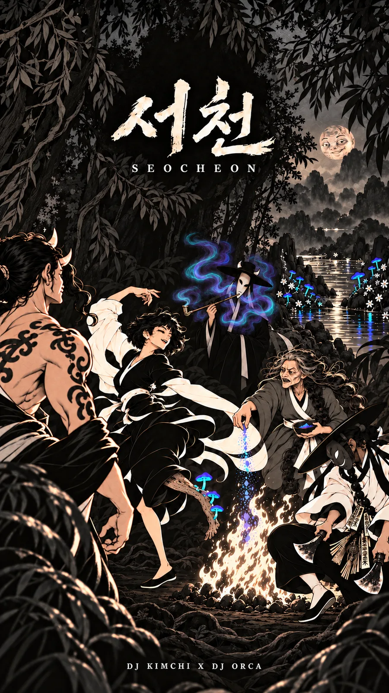

Jinsung Kim / Independent AI Practice
DJ KIMCHI.
Cover art, material studies, and visual development. This archive brings together the work behind the selected projects on my portfolio.
DJ KIMCHI / Selected music
The sound behind the artwork.
Five tracks from my independent creative practice, including SEOCHEON. Choose a cover and listen.

Selected track
SEOCHEON · 서천
Artwork: DJ KIMCHI × DJ ORCA
01 / Cover art & explorations
Artwork archive.
PRESENT — engraved cover exploration
DJ KIMCHI × DJ ORCA
Artwork exploration
PROTOCOL: NULL — bronze cover
DJ KIMCHI X DJ ORCA
Cover artwork
GENESIS PROTOCOL
DJ KIMCHI X DJ ORCA
Cover artwork
PROTOCOL: BREATHLINE
DJ KIMCHI X DJ ORCA
Cover artwork
PRESENT — red cover variant
DJ KIMCHI X DJ ORCA
Cover artwork
KAN HA DISKAN
DJ KIMCHI
Cover artwork
BREATH CROWN / growth study
Three keyframes exploring how a form grows from a seed into an intricate crown.
Breath Crown — Early
Growth study / development keyframe
Growth study
Breath Crown — Intermediate
Growth study / development keyframe
Growth study
Breath Crown — Expanded
Growth study / development keyframe
Growth study
Versions & experiments
PROTOCOL: NULL — red cover variant
DJ KIMCHI · artwork variation
Alternate artwork
PRESENT — promotional mockup
DJ KIMCHI X DJ ORCA
Promotional mockup
PRESENT — signature concept
DJ KIMCHI X DJ ORCA
Visual concept
Cover art, alternate treatments, and a promotional mockup are shown as visual work. Credits follow the source images. Open any image to view it in full.
02 / Visual direction
A material language.
Dark metal, fine ridges, and glimpses of gold. A study across three forms from the visual direction draft.
Material language / three studies
Visual direction study
Visual concept
03 / Visual development
PRESENT /
the sequence.
Ten development frames in source-file order. The last frame returns to the first. These stills show an exploration, not a completed video.
Frame 01
PRESENT · visual development
Development frame
Frame 02
PRESENT · visual development
Development frame
Frame 03
PRESENT · visual development
Development frame
Frame 04
PRESENT · visual development
Development frame
Frame 05
PRESENT · visual development
Development frame
Frame 06
PRESENT · visual development
Development frame
Frame 07
PRESENT · visual development
Development frame
Frame 08
PRESENT · visual development
Development frame
Frame 09
PRESENT · visual development
Development frame
Frame 10
PRESENT · visual development
Development frame